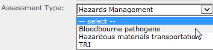
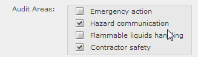
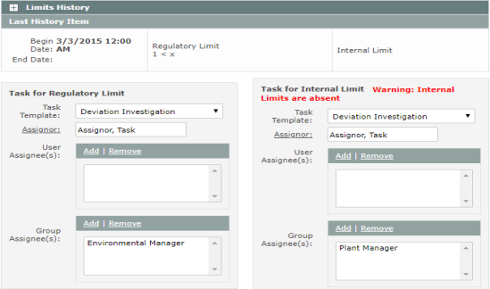

For complex properties (those that involve multiple related fields), you must use the extended column format in this upload tool.
Download the Excel template file:
Object Properties Editing Tool - Complex Properties
Common properties are shown in the Property Name column. Associated fields are color-coded in the template, indicating the related property values for an object that must be entered on the same line. Entries for these fields must use the same column number shown in the template.
For example, the Data Collection/Sampling Frequency fields are in columns AQ and AR in the template. To edit these properties, you need to enter both values in the same line and in the correct columns, as shown (intervening columns are hidden):
| A | B | AQ | AR | |
| 1 | Path and Name | Property Name | Data Collection Period Frequency | Data Collection Period Time |
| 2 | path/parameter A | data collection/sampling frequency | 1 | month |
| 3 | path/parameter B | data collection/sampling frequency | 2 | week |
Note that if you were to edit these fields in EMS, you would be required to enter both values in order to save changes. Similarly, in the Excel file, since each line is processed separately, both values must be entered on the same line to avoid an error.
Since there are a large number of columns, to avoid confusion, you can hide any columns you do not need to edit. However, do not delete the columns. The location address (column number) is used in processing; the column heads are unimportant (the first row in the file which contains the column names is skipped).
Remember: Blank values in a property value field are ignored and will not be edited. To clear an existing value for a field, enter <clear> in the cell.
Linked Lists and Multi-Select List Fields
For custom fields that are linked lists, use the '|' character to separate values.
Example: Linked lists

| A | B | C | |
| 1 | Path and Name | Property Name | Property Value |
| 2 | path/object A | Assessment Type | Hazards Management | TRI |
Use the same format for multi-select list fields.
Example: Multi-select list field

| A | B | C | |
| 1 | Path and Name | Property Name | Property Value |
| 2 | path/object A | Audit Areas | Hazard communication | Contractor safety |
Fields with Historical Values
For properties with historical values, including System Variable values, enter the Start Date in column D, and End Date in Column E, if appropriate. If there is an existing historical value in the system with no end date, you must edit the existing value and enter the end date for that value history first, just as when editing the field in the system.
Example: End date existing history (2) and add a new value history (3).
| A | B | C | D | E | |
| 1 | Path and Name | Property Name | Property Value | Start Date | End Date |
| 2 | path/parameter A | data collection/sampling frequency | 1 | 1/1/2008 | 1/1/2010 |
| 3 | path/parameter B | data collection/sampling frequency | 2 | 1/1/2010 |
Historical values are identified according to the Start Date. Existing historical values will not be deleted or changed, as long as there is no conflict with the new value. It is not necessary to list all existing historical values to preserve them.
The History Update Type (column AT) specifies how historical values are to be edited:
Replace: This option deletes all existing value histories and replaces them with the new value history.
Merge: This option will create a new value history with the specified start date and at the same time end the current history. The End Date for the current history will be the same as the Begin Date for the new history. (This is the default option.)
End: This option will simply end date the current value history.
Automated Task Properties
On this worksheet you can edit the properties of automated tasks associated with Numeric Requirements and Event Logs. These fields include the Task Template to apply to the object and the related fields.
You can also edit these fields and the Task Template associations with the Task Template worksheet in the Template Update Tool. If you do not want to edit other object properties at the same time, the Template Update Tool will be easier to use, since it only contains the relevant task fields.
To edit single and recurring tasks not associated with a Task Template, use the Task Editing Tool.
For a Numeric Requirement, you may edit the Task for Regulatory Limit and Task for Internal Limit, each of which include the following related fields: Task Template, Assignor, User Assignees, Group Assignees. A limit value must be applied to the Numeric Requirement before the fields can be edited. Limit values cannot be edited with the bulk tool.
The Task Template and related fields for a Numeric Requirement, as seen in EMS, are shown below.

The fields to be edited on the Object Properties template:
| A | B | J | K | L | M | N | |
| 1 | Path and Name | Property Name | Task Template Name | Assignor | Assignor From Data Entry | User Assignees | Group Assignees |
| 2 | \path\numeric requirement A | task for regulatory limit | Loading Exceedance | TaskMailbox | Env. Manager |
For an Event Log, the same fields apply (columns J thru N).
Assignor From Data Entry field (column L) applies only to Manual Event Logs with an associated Task Template. If the Assignor field is empty, then Assignor From Data Entry must be TRUE. If the Assignor field is completed and Assignor From Data Entry is empty, then it is assumed to be FALSE by default. If Assignor From Data Entry is TRUE, then any value in the Assignor field is ignored.
Example: Task for Manual Event Log
| A | B | J | K | L | M | N | |
| 1 | Path and Name | Property Name | Task Template Name | Assignor | Assignor From Data Entry | User Assignees | Group Assignees |
| 2 | \path\event log | task template | Document Incident | true | Field Inspectors |
Caution: Edits to these fields will overwrite all existing values. So, for example, if you want to add a new assignee to a task without removing the existing assignees, you must list ALL assignees. When editing existing task properties on Numeric Requirements and Event Logs, you should run a System Properties Report first to obtain current values.
When designating user assignees, use the user login id. Separate multiple assignees with the "|" character.
Example: Task for Automatic Event Log with multiple user assignees.
| A | B | J | K | L | M | N | |
| 1 | Path and Name | Property Name | Task Template Name | Assignor | Assignor From Data Entry | User Assignees | Group Assignees |
| 2 | \path\event log | task template | Document Incident | TaskMailbox |
|
Plant Engineer | Plant Manager |